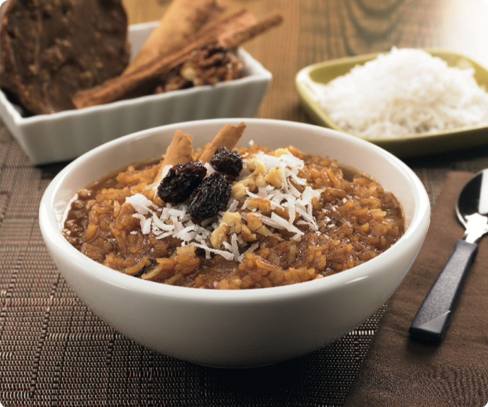

¿Cómo hacer el arroz zambito?
Ingredientes:
- 3 1/2 Tazas de Agua
- 1 1/4 Taza de Arroz largo
- 1 pedazo de cáscara de naranja
- 2 Unidades de Clavo de olor
- 2 clavos de olor
- 1 Bastón de Canela
- 1/8 Bola de Chancaca
- 1 Lata de leche
- 1/2 Lata de leche condensada
- 1/3 Taza de Pasas Rubias
- 2 Cucharaditas de Coco rallado
Instrucciones:
Pasos:
- Colocar en una olla 3 tazas de agua, el arroz, la canela y el clavo de olor. Cocinar hasta que se reduzca el agua y reviente el grano. Retirar del fuego y sacarle la canela y el clavo. Reservar.
- En otra olla, derretir la chancaca con ½ taza de agua fría y hacer una miel ligera. Incorporarla al arroz y mezclar bien con la ayuda de un tenedor.
- Agregar 1 lata de leche, 1/2 lata de leche condensada, las pasas y el coco. Cocinar por 2 minutos y retirar del fuego. Servir en una copa y espolvorear canela.